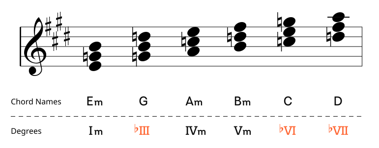

1. 从同主音调借用和弦
1. 从同主音调借用和弦
继“副属和弦”之后，这次我们将进一步拓展和弦库的版图。
本篇所要解锁的，是临时借用同主音调（Parallel Key）的音阶来丰富和声色彩的高级技法。关于“同主音调”，我们在上一篇刚刚学过：主音（调式中心音）相同、唯独大小调性质相反的两个调互为同主音调。


本篇中我们首先以大调为大本营，探讨从同主音小调中借用和弦。以 C 大调为例，就是跨界向 C 自然小调 借用和弦。换言之，就是在 Mi、La、Si（E、A、B）上带有降号（♭）的一整套和弦群。
来自同主音小调的和弦群
从同主音小调（Parallel Minor Key）中搬过来的全新和弦，用级数代号书写如下：

当和弦根音带有临时变音记号时，级数代号前同样会冠以变音记号，令人耳目一新！ 对于 III、VI、VII 级而言，由于根音本身所在的位置就整体下降了，因此其级数代号直接写作 ♭III、♭VI、♭VII。
II级和弦暂且延后
对于第II级的和弦，由于带上了 (♭5) 的减五度记号，它既非纯粹的大三和弦也非小三和弦，属于结构特殊的和弦，因此现阶段暂不展开。

这类特殊和弦将在第III章中做系统汇总。由于其实用频次和地位相比其他和弦稍逊一筹，延后讲解完全合情合理。
带有降号的级数代号
在 C 大调之外的其他调性中借用同主音小调时，受黑白键排列的影响，某些和弦的具体音名可能并不带降号，但其级数代号依然统一规范称为 ♭III、♭VI、♭VII：


如上所示，在升号系调性中，借用时往往是借助还原记号（Natural）来实现的。在 G、C、D 这三个和弦上，呈现出“虽然和弦名称很干净没有降号，但级数代号却明确冠以降号”的现象。这里初学时极易混淆，须多加留神。
性质变换老友重逢
细心的朋友肯定已经发现：其中的 Im、IVm、Vm，早在第I章的“性质变换”中就已经提前登场过了！ 因此，剩下的另外三位（♭III、♭VI、♭VII）才是本课重磅亮相的全新主力面孔！

2. 小和弦三剑客的温故知新
我们首先重温此前学过的三位老朋友，并为其注入更成体系的乐理深度。
IVm：直击灵魂的凄美哀愁（小下属和弦）
I IVm I IVm I
IVm 在专业术语中被称为小下属和弦（Subdominant Minor / サブドミナントマイナー）。它散发着无可替代的独特哀愁，在抒情歌曲中堪称镇场之宝。上述音频走向了 I，而平滑过渡衔接至邻近的 V 或 IIIm 同样是经典神仙操作：
IIm IIIm IVm V
这是在导歌预副歌（B段）中屡试不爽的经典推进。作为引出 V 的绝佳前置铺垫，相比平淡的常规 IV-V，注入了浓郁揪心的凄美感。
IV IVm IIIm VIm
这是王道进行 4-5-3-6 的变体：用小下属和弦替代了原本高亢的属和弦 V，弃“激昂”而取“凄楚”，风味别具一格。
IVm 极少会连接到 I、IIIm、V 以外的和弦。这类特色浓郁的借用和弦就像个性鲜明的特型演员，唯独在少数特定的经典连接模式中才能将其魅力发挥得淋漓尽致。绝不像基调和弦那样怎么随意拼接都自成一派。
Vm：意外的明暗反转（小属和弦）
性格更为怪癖的 Vm 被称为小属和弦（Dominant Minor / ドミナント・マイナー），其用法更为讲究苛刻。此前介绍过顺滑滑向 IV 的经典套路：
VIm Vm IV IVm
此外，它还有其他别开生面的高阶玩法：
VIm7 IIIm7 Vm7 IIm7
这里展示了罕见的小和弦四连击。仅仅混入了一个非顺阶的借用和弦，整段音乐的意境瞬间变得扑朔迷离。在 C 大调中，Vm7 对应的是 Gm7 和弦，而 Gm7 同时也是 F 大调与 B♭ 大调的顺阶成员。 在连续四个小和弦的冲刷下，当前究竟处于何种调性在听觉上产生了美妙的迷离感。但这绝非缺陷，反而营造出令人沉醉的朦胧意境[53]。
Im：调性根基的终极反转（小主和弦）
Im 被称为小主和弦（Tonic Minor / トニックマイナー）。由于它直接将整首歌曲的核心领袖由大翻小，冲击力极为剧烈，属于极难驾驭的猛药。因此在第I章我们并未放置音频，本篇让我们正式直面它的震撼力！
最经典的用法之一，是先展示一段大调 I 和弦的明媚乐句，紧接着将其原封不动替换为 Im 再次奏响，以此具象化表达由明入暗的情感幻灭：
I V7 Im V7
这是肖邦著名的《离别曲（Tristesse, Op. 10 No. 3）》。最初呈示的是明朗的 A - E7，随后立即变奏为幽暗的 Am - E7。配合速度与力度的细腻起伏，在那一刹那，一股“天哪……发生了什么变故？！”的震惊心碎感油然而生——堪称小主和弦教科书级的神来之笔。 此外，它也可以在偏暗黑的乐段中担当出其不意的奇兵：
VIm V VIm I
这是尚未改造的版本。最后的 I 和弦显得过于阳光直白，略感违和。此时我们大胆将结尾翻转为小和弦：
VIm V VIm Im
瞬间多了一丝冷酷乖张的暗黑气质。在循环电子音乐中，常常会粗暴地通篇堆砌小和弦，在那类语境下调用 Im 相对更加顺理成章。但即便如此，相比于亲民的 IVm，驾驭 Im 依然对创作者的构思想象力提出了极高要求。
接下来，我们将正式迎接三位素未谋面的全新战将！
3. 带有降号根音的和弦群
♭III、♭VI、♭VII 这三位和弦由于根音本身就带有降号，因此脱离原本大调主心骨的“出离感”格外强烈，具备一瞬间将音乐风貌彻底推倒重构的颠覆性魔力。 其基本运转逻辑在于：最终仍需顺畅落回基调和弦以重归宁静，因此它们通往后续和弦的路径有着非常鲜明的轨迹规律。
♭VII：漫步云端的迷人悬浮感
在带有降号根音的三位猛将中，出镜率最高、最受宠爱的当属 ♭VII。在 C 大调中对应的是 B♭ 和弦。让我们来聆听真实范例：
IIm7 IΔ7 ♭VIIΔ7 V
这是一种前所未有的清新声响！由于带有降号根音的和弦无法简单套用大小调明暗对立来概括，其质感极难用言语精准描摹；但相信大家都能感受到：♭VII 带有一种宛若凌空微步、身躯轻盈悬浮于半空的独特飞扬感。
日本家喻户晓的国民名曲《请给我一双翅膀（翼をください）》便是将这种悬浮感运用到化境的典范：在唱到“想要展翅高飞（飛んで行きたいよ）”的那个关键瞬间，轰然奏响的正是 ♭VII 和弦！
像这样后接 V 和弦的形态，是将 ♭VII 作为通往属和弦爆发前的助跑垫脚石，在抵达情绪顶点前巧妙打出一记漂亮的迂回弧线。 此外，另一种极其普遍的去向是平滑衔接至 IV 或 VIm。在这些连接中，♭VII 自身便成为了聚光灯下的绝对主角：
IV IIm ♭VII VIm
由 IV-IIm 推进，仅停留一拍 ♭VII，随后丝滑切入 VIm 着陆。营造出单纯依靠基调和弦绝对无法调配出的忧郁布鲁斯风味。 从 ♭VII → VIm 是低音半音下行的顺滑滑落，声部连接优美至极。在以往的基调和弦中，根音半音级进仅存在于 III 与 IV 之间，因此这种声响听起来极具新鲜感。
♭VI：神秘妖娆的异域色彩
相比 ♭VII，展现出千面风姿、同时自身带有一股耐人寻味的怪异性格、略显偏门的当属 ♭VI。在 C 大调中对应的是 A♭ 和弦：
IΔ7 IIIm7 VIm ♭VI Vsus4 V
当行进踏入第3小节的瞬间，整个空间的气场骤然剧变！像这样营造出一种亦正亦邪、神秘妖娆的深邃魔幻感，正是 ♭VI 最具杀伤力的看家本领。 相比 ♭VII，它的性格更为浓烈霸道，因此使用场景相对更窄。如上例所示，以低音半音下行顺畅滑向 V 是最为教科书般的黄金连接。
♭III：平滑下行的丝滑桥梁
♭III 同样性格百变，使用场景极其精炼聚焦。它最主流、最核心的使命，正是作为从 IIIm 顺滑降向 IIm 之间的半音过渡润滑剂。借助它，低音能够形成极其规整的半音阶顺阶下滑：
IVΔ7 V IIIm7 VIm IIm7 V I
这是大家耳熟能详的 4-5-3-6-2-5-1 经典进行。现在我们尝试将当中的 VIm 替换为 ♭III：
IVΔ7 V IIIm7 ♭IIIΔ7 IIm7 V I
这次我们搭配了七和弦。在原本理应稳稳落向 VIm 的安定着陆点上，突然杀出一个离调的调外和弦，首先在心理上带来了极具刺激感的意外感；加之由 IIIm → ♭III 的半音顺滑下滑，与原本大开大合的五度下行形成了鲜明反差；配合 E♭ 与 B♭ 两个调外音对调性的轻微搅动，营造出极其雅致考究的高级情调。
在流行天后 aiko 的代表作《初恋》副歌开头，直接写出了 IV - IVm - IIIm - ♭III 的惊艳走向，一连串豪掷了两个同主音小调借用和弦，将少女心中那份无处安放的酸楚与悸动刻画得入木三分。在营造都会爵士风情时，同主音小调和弦同样是极佳的利器。
4. 摇滚乐中的硬核用法
向小调借用和弦，能抹去大调直白傻白甜的气质，让调性在明暗交织中呈现出粗粝的硬核张力。从某种意义上说，这与摇滚乐中的“强力和弦（Power Chord）”有着异曲同工之妙。尤其 ♭III、♭VI、♭VII 这三位猛将，在经典摇滚乐的标志性连复段（Riff）中几乎是无处不在的绝对主角！让我们看几组经典范例：
I V ♭VII IV
这是一段极其率真纯粹的朋克摇滚和弦进行。由于上述三位成员本质上都是大三和弦，骨子里带着大和弦特有的开阔冲击力，与朋克气质天生一对。借由同主音小调和弦，哪怕全篇只用大和弦，也能翻滚出无穷无尽的色彩层次。
♭VII とI の反復→IV
仅仅依靠 I 与 ♭VII 两座大山之间的反复横跳，就足以构筑起一段极其坚挺抓耳的摇滚 Riff。
I ♭VII ♭VI V
I → ♭VII → ♭VI 的连续大踏步下行，清一色由大和弦以全音距离步步紧逼，气势雄浑磅礴、充满排山倒海的力量感。
I ♭III IV V
这是巧妙融入 ♭III 的范例。虽然前面讲过在流行抒情曲中 ♭III 以半音下行为主，但切换到硬摇滚语境中，像这样大步跃进立刻展现出了完全不同的强悍生命力。
IV V I IV V ♭VI ♭VII
IV - V - ♭VI - ♭VII 的连续大二度级进上行，是摇滚乐最热血沸腾的招牌推土机走向！如果只用原本的基调和弦，从 V 往上只能接到 VIm，情绪瞬间就被泄掉了；而果断切入 ♭VI，不仅毫无收拢泄力之感，反而能一鼓作气持续向上冲锋！在后续段落中紧接着穿插 I 与 ♭VII 的双和弦狂欢——这种编配在摇滚名作中简直是家常便饭。
至此，♭III、♭VI、♭VII 三位悍将正式加入大家的军火库！不同于仅仅颠倒性质的常规性质变换，这些根音直接发生变位的和弦拥有彻底颠覆乐段情感基调的强大伟力。最后，让我们将它们最经典的黄金搭配梳理汇总：
| 经典进行 | 典型意境色彩 | 最常见出没场景 |
|---|---|---|
| IV - IVm - I | 凄美温柔释怀 | 副歌尾声收拢 |
| IV - IVm - IIIm | 揪心动情回肠 | 副歌开篇爆发 |
| IIm - IIIm - IVm - V | 凄楚蓄力推进 | 导歌（B段）尾声 |
| ♭VII - V | 悬浮腾空跃入高昂 | 副歌前冲刺 |
| ♭VII - IV | 悬浮中平稳着陆 | 全曲任意段落 |
| ♭VI - V | 妖冶幽诡异域感 | 特色段落点缀 |
| IIIm - ♭III - IIm | 丝滑半音阶过渡 | 副歌行进中段 |
| ♭VI - ♭VII - I | 豪迈热血摇滚推进 | 副歌决胜高潮 |
千姿百态，妙不可言！最核心的法则在于：深刻领悟每种进行的情感色彩，并将它们与你渴望倾诉的音乐主题精准锚定。
有借有还，再借不难
正如我们在“副属和弦”中所阐明的：这类和弦本质上是从其他调性中“临时借调”而来的客人。有借有还、及时回归大本营，既能极大地拓宽色彩疆域，又绝不会让听众误以为发生了不可逆的突兀转调。 纵观上述经典进行，除“♭VI - ♭VII - I”等冲锋套路外，绝大多数在借用之后都会立刻稳稳回归基调和弦。在主流流行编曲中，借用1到2个和弦后迅速落回原位顺阶，是确保作品大气质感最稳健成熟的基本功。
关于“同主音小调借用和弦”，还有许多关键细节值得探讨，我们将在下一篇继续深入展开……